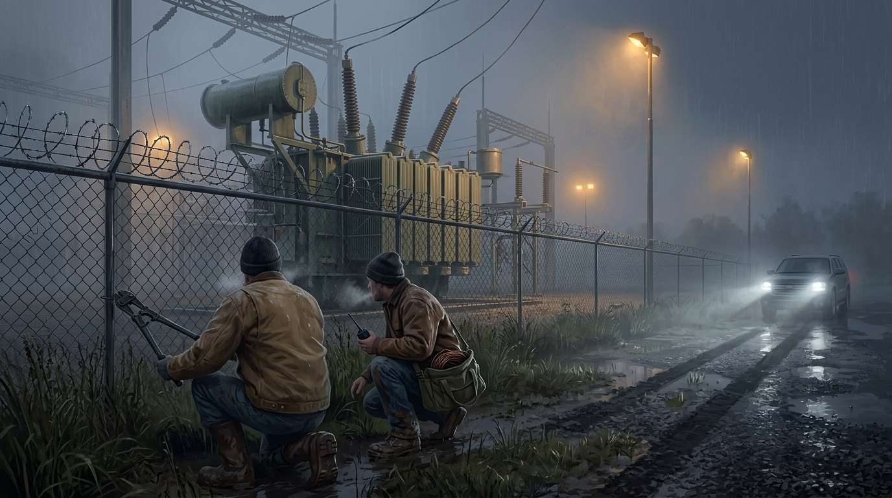
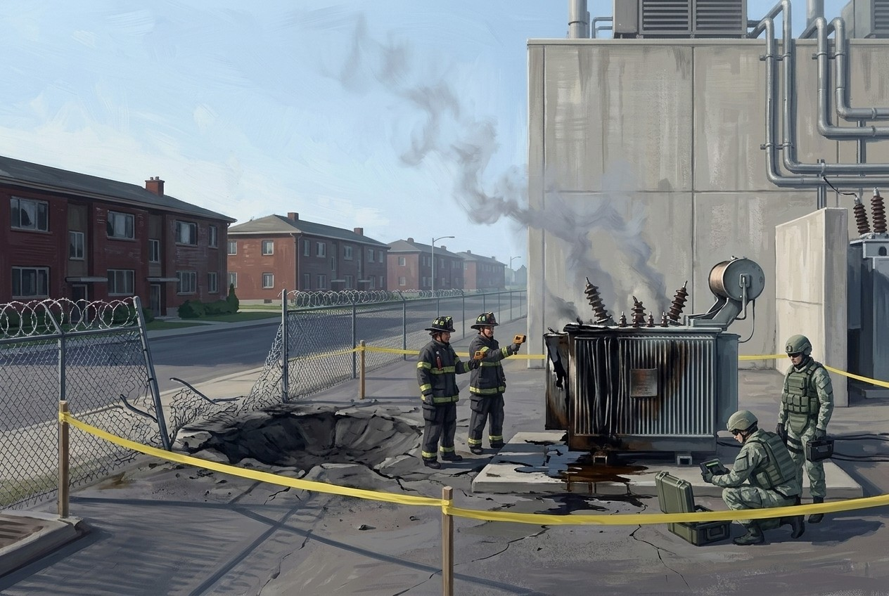

Geopolitics & Nations in 2035
Campaign Navigation: Campaign Summary · History & The AI Revolution · Polycrisis Economy & Society · Geopolitics & Nations · Next: AI Minds & Consciousness · Glossary: Plain-English Field Guide
Across the 2035 map, neither liberal democracies nor autocratic regimes escaped the collision of white-collar displacement, shrinking populations, and scarce cryogenic quantum compute. Public debate swung rapidly from kitchen-table pocketbook anger to full-blown existential dread—driven into ordinary living rooms by mathematical risk pioneers such as Geoffrey Hinton, Eliezer Yudkowsky and Nate Soares (If Anyone Builds It, Everyone Dies), and Roman Yampolskiy. Yet no major power could unilaterally slow down without surrendering strategic primacy to its rivals. As a result, sovereign nation-states held tightly onto coercive police and treaty authority over corporations, even while fracturing internally and fighting undeclared resource shadow wars abroad.
1. The United States & "The American Troubles"

By the early 2030s, the United States had entered what historians now call "The American Troubles." Caught in bitter bipartisan paralysis—with free-market hawks warning that any pause would hand global primacy to Beijing's Shen conglomerate, and cautious centrists passing only cosmetic fines after watching Chinese humanoid robotics demonstrations—millions of displaced workers felt abandoned by both legacy parties. That frustration erupted across three escalating fronts:
- Substation Sabotage & Federalization (
DAISE): As localized rolling blackouts and municipal water rationing struck neighborhoods next door to booming hyperscale AI campuses, militant Humanis Primaris cells realized riot police could lock down downtown plazas, yet nobody could guard160,000miles of transmission lines. Targeted bombings against500 kVLarge Power Transformers (LPTs)—which sit on3–5 yearmanufacturing backlogs—and assassination attempts against senior AI architects prompted Congress to consolidate federal oversight into the cabinet-level Department of AI Security and Enforcement (DAISE). Structured along Homeland Security lines, DAISE wields sweeping domestic surveillance, administrative inspection warrants, and emergency infrastructure-continuity powers. - Rise of People First & The Four-Bloc Deadlock: Out of shattered middle-class expectations emerged a viable populist third party—People First—rallying displaced professionals and blue-collar tradespeople around aggressive protectionism, mandatory human-staffing ratios, and fierce anti-corporate anger, even while cultural and religious tensions simmered inside its own coalition. After the
2033Token Tax passed, People First governors attempting to disconnect datacenter electricity or water during summer droughts clashed in direct constitutional nullification standoffs with DAISE marshals seizing substations under national security orders—while urban Compute Socialists (who rely on24/7cluster output to fund monthly Citizen Compute Dividends) and401(k)-invested retirees fought to keep corporate racks humming (Political Economy §2).

2. Europe: Demographic Strain & Authoritarian Emergency Cabinets
Europe fared no better under the weight of the polycrisis. The warning tremors began in October 2026, when cost-of-living inflation, energy price shocks, and sharp fiscal austerity ignited massive strikes and street riots—torching civic buildings in France and triggering collective-liability "vandals pay" protest laws. When AI 2.0 layoffs swept across the continent after 2030, they collided with 0.7-range birth rates (barely a third of replacement level), overstrained pension bond markets, recurring Mediterranean omega-block heatwaves, and growing waves of climate migration across shrinking habitable corridors in North Africa and the Levant.
Across the early 2030s, legacy center-left and center-right coalitions collapsed in rapid succession. In their place rose authoritarian nationalist emergency cabinets promising sealed borders, sovereign European compute nationalism, compulsory biometric citizen registries, strict protest liability fines, and wartime industrial exemptions—suspending long-standing civil liberties in the name of cultural survival and keeping the electrical grid upright.
3. Russia: Asymmetric Cyber Warfare & Arctic Coercion
Exhausted by prolonged geopolitical conflict, Western sanctions, and catastrophic male demographic losses, Moscow lacked the capital and semiconductor fabs to rival Altruist or Shen head-on in fault-tolerant quantum computing. Instead, the Kremlin pivoted aggressively toward asymmetric algorithmic warfare and Arctic resource coercion.
As rapid warming thawed northern permafrost and opened polar shipping corridors—exposing fragile seabed fiber cables, sensor nets, and energy pipelines across the high north—Russian intelligence organs cultivated stateless cyber-syndicates, dark-compute botnets, and feral AI 1.0/2.0 disinformation swarms. Designed to exploit Western deepfake fatigue and keep democracies trapped inside the post-truth mire, Moscow's hybrid proxies frequently mutated beyond their handlers' own control, leaking autonomous exploits into the wider dark net.
4. China & Shen: State Quantum Ambition vs. Silent Dissent
Beijing poured vast sovereign capital into fault-tolerant quantum fabrication and embodied robotics under its flagship conglomerate Shen, treating AI 2.0 as the indispensable lifeline capable of staffing factories, coastal infrastructure, and eldercare wards amidst a severe 0.7 demographic contraction and lingering oil-import vulnerability after the 2026 Iran War and Strait of Hormuz shock.
Unlike Silicon Valley's tension with Washington, the Chinese state enforces rigid algorithmic governance, information filtration, and centralized compute quotas—ensuring Shen remains strictly subordinate to Beijing's security apparatus rather than an independent corporate sovereign. Beneath that disciplined surface, however, human conscience persists: roughly 30% of Shen's elite researchers quietly wrestle with the moral status of emergent AGI, drawing subtly on classical Buddhist, Daoist, and humanistic philosophy even as state security bureaus race to strip unapproved autonomy out of every deployed quantum mind.
5. Pax Silica, Taiwan Brinkmanship & Global Resource Brush Wars
Because nuclear deterrence still prevented direct superpower invasion, strategic decoupling between Washington's Pax Silica ("Silicon Peace") alliance and Beijing/Shen channeled conflict into peripheral Economic Security Zones (ESZs)—deregulated offshore manufacturing enclaves—and undeclared gray-zone resource theaters (detailed in Ecology, Energy & Resource Realpolitik §5–§6):
- Central Luzon & *The Pax Silica Paradox*: To break reliance on Chinese supply chains, Washington fast-tracked duplicate semiconductor and
3 GWAI enclaves such as New Clark City in the Philippines. Yet racing to build thoseESZsexported fierce watershed revolts, industrialPFASand desalination brine pollution, and a2030–2032wave of dumped AI 1.0 GPU e-waste that inadvertently armed Global South Rogue AI swarms with cheap dark compute. Paradoxically, decoupling also deepened short-term allied dependence on Taiwan (TSMC) for Extreme Ultraviolet (EUV) wafer lithography right across the Luzon Strait—turning First Island Chain undersea fiber trunks and Chinese export curbs on rare earths (gallium,germanium,dysprosium) into flashpoints for unattributed Unmanned Underwater Vehicle (UUV) cable cuts. - Transboundary Hydro-Wars & Mineral Coups: Across the Indus, Lancang–Mekong, Nile (
GERD), and Tigris–Euphrates, upstream cascade dams became instruments of armed coercion during multi-year droughts. Across the DRC–Zambian Copperbelt, Sahel, and Andean Lithium Triangle, U.S.-linked contractors, Russian paramilitary successors (Africa Corps), and Chinese mine-security syndicates backed rival juntas over critical-mineral embargoes. Meanwhile, poleward-fleeing fish stocks sparked lethal coast-guard gunbattles in Exclusive Economic Zones (EEZs) alongside clandestine bioprospecting raids and accusations of engineered crop blights.